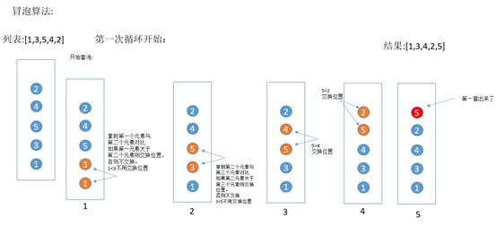
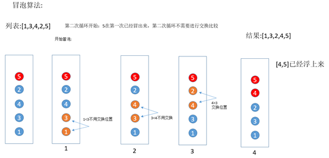
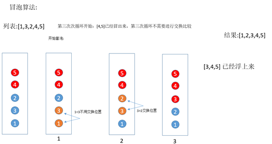
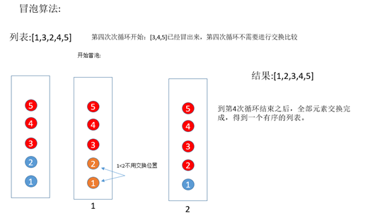

冒泡排序是常用排序算法中最简单的一种，可能很多同学看到这个标题之后就会很不屑的说，冒泡排序谁不会吖，你还在这里献丑！我就献丑了，怎么了！我骄傲了吗？还不会的同学好好看了，以后你也可以在别人面前说，连冒泡排序都不会退出程序界啦。基于这个背景衍生了一个排序算法鄙视链。
排序算法鄙视链：写冒泡的鄙视不会的，会选择排序的鄙视只会冒泡的，会插入排序的鄙视选择排序，希尔排序鄙视插入排序，快速排序鄙视希尔排序，归并排序鄙视快速排序，堆排序鄙视归并排序，基数排序鄙视堆排序。(纯属娱乐)
我们为了不站在鄙视链的最底端，今天就来学习下最简单的一个排序冒泡排序。
冒泡算法的名字由来是因为越大的元素会经由交换慢慢“浮”到数列的顶端（升序或降序排列），就如同碳酸饮料中二氧化碳的气泡最终会上浮到顶端一样，故名“冒泡排序”。
基本思想：重复遍历要排序的数列，依次比较两个相邻元素的大小，根据条件交换元素，让小的数下沉，大的数冒起来。(同样可以反过来大的往下沉，小的往上冒)。
将列表[1,3,5,4,2]进行排序，把元素想象成一个小球。如下图所示:

第一次循环进行交换最大值5浮到顶部。接下来进行第二次循环： 5在第一次已经冒出来，第二次循环不需要进行交换比较

第三次循环[4,5]已经冒出来，第三次循环不需要进行交换比较

第四次循环：到第4次循环结束之后，全部元素交换完成，得到一个有序的列表。

到底循环多少次？每一次交换多少次？
若初始文件是反序的，需要进行n-1趟排序。每趟排序要进行n-i次的比较(1≤i≤n-1)，且每次比较都必须移动记录三次来达到交换记录位置。
Python代码实现冒泡算法排序：
a = [1, 3, 5, 4, 2]
n = len(a)
for i in range(n - 1):
for j in range(0, n - i - 1):
if a[j] > a[j + 1]:
a[j], a[j + 1] = a[j + 1], a[j]
print(a)
最坏时间复杂度O(n2)
平均时间复杂度O(n2)
冒泡排序就是将大的元素往后移动，交换发生在两个元素之间，且交换时不会影响到其他元素，只会发生交换与不交换，如果两个元素相等是不会发生交换的。冒泡算法是一种稳定的排序算法。